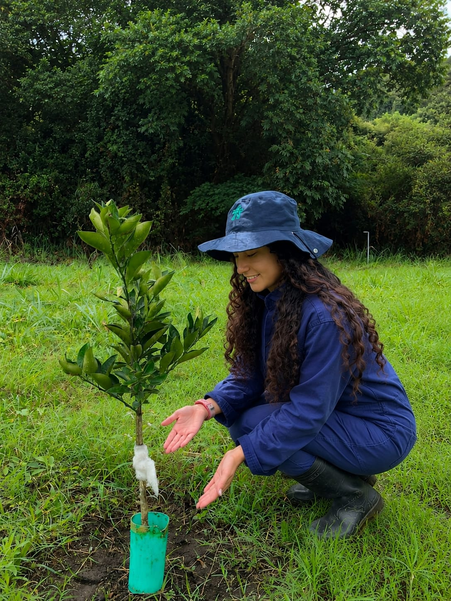
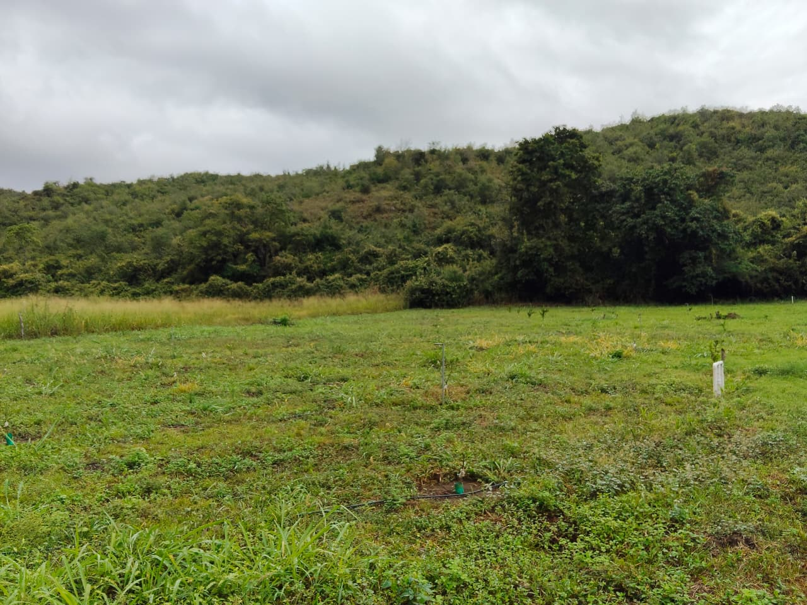
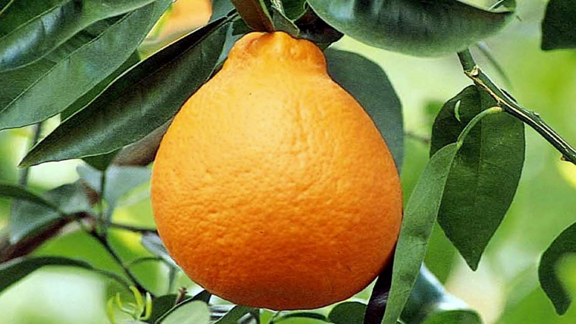
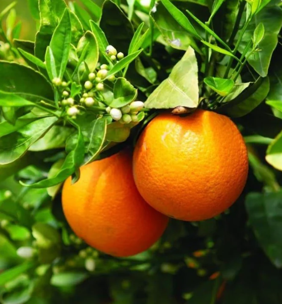
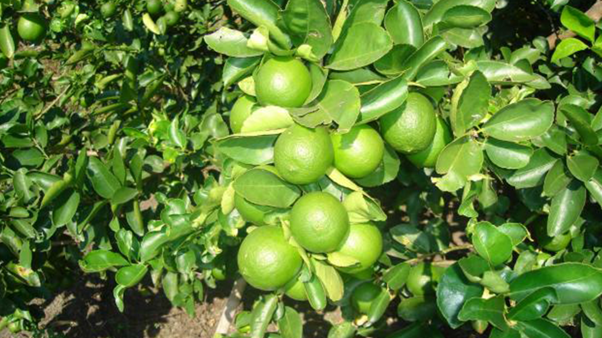
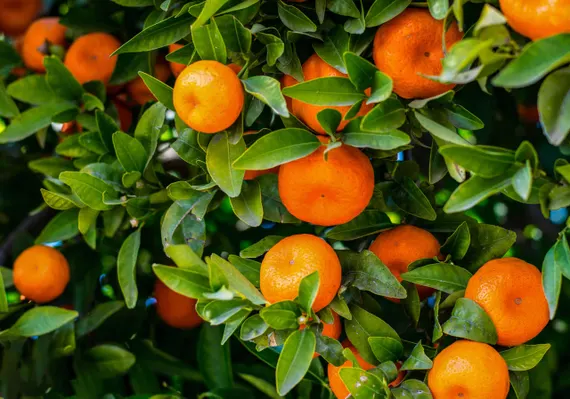
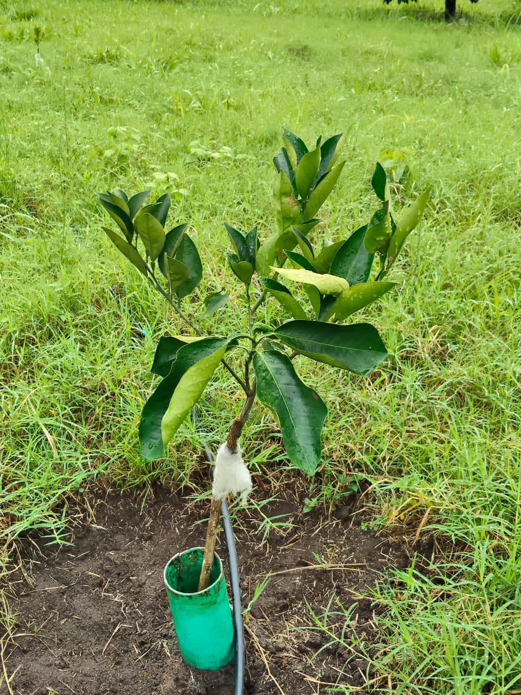
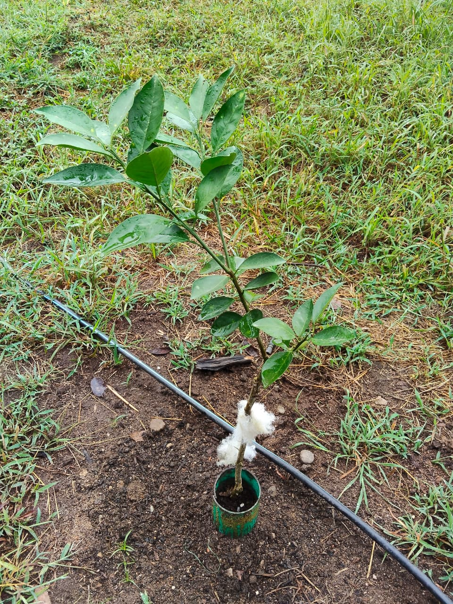
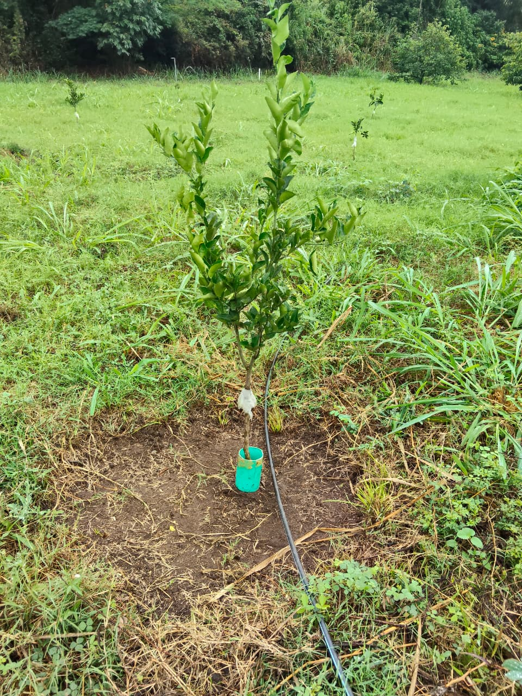
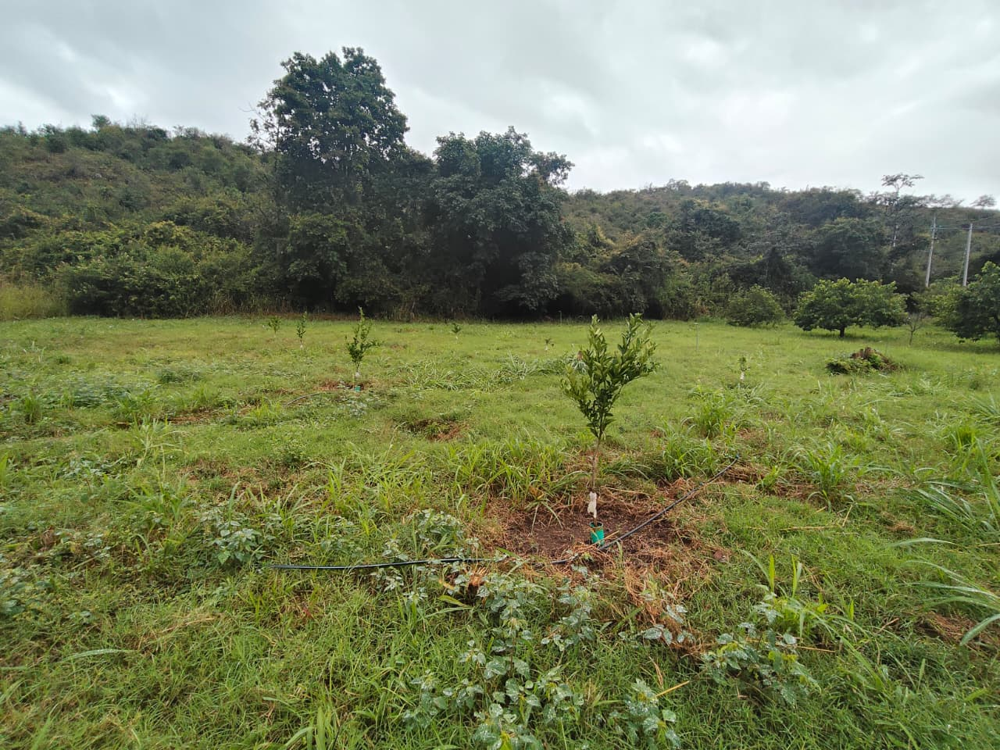

Unidad productiva agrícola de vanguardia orientada a la formación práctica, el aprendizaje técnico y la producción sostenible de frutas cítricas de alta calidad en el sur del Huila.

En el Centro de Formación Agroindustrial SENA La Angostura se encuentra esta unidad productiva destinada a la formación práctica y la producción agrícola. Cuenta con manejo agronómico adecuado y permite fortalecer los conocimientos técnicos de los aprendices mediante labores de campo, mantenimiento del cultivo y control fitosanitario.
Los cítricos son frutos de gran importancia alimenticia: aportan vitamina C, minerales y antioxidantes que benefician la salud de los consumidores.


Citrus × tangelo

Citrus sinensis

Citrus × latifolia

Citrus reshni




Atta spp. — cortadora de follaje
Planococcus citri — chupadora
Aphis spiraecola — chupador
Phyllocnistis citrella — minador